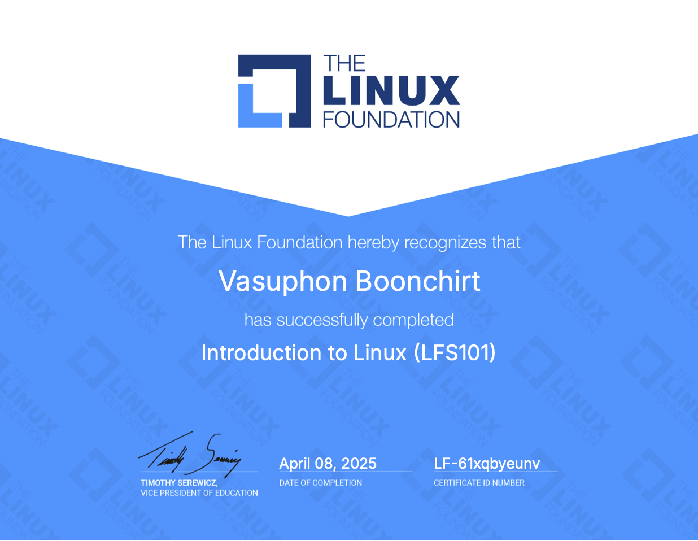

-
2023 - Now: Bachelor’s Science degree in Faculty of Information and Communication Technology (MUICT) minor Software Engineering at Mahidol University
-
2017 - 2022: High School, Assumption College (Science-Engineer Program) | GPA 3.20
-
2012 - 2017: Primary School, Assumption College Thonburi

Vasuphon Boonchirt
Software Engineer student
Computer student | Mahidol University Faculty of Information and Communication Technology (International program)
Social media contact links:


My Skills and interests include:
- Software Engineer
- Product Ower (PO)
- Data Science & Analytics and Visualization
- IT Consulting and IT Services
Technology Skills:
- Python
- Java (OOP)
- C
- HTML CSS
- JavaScript
- Data Structures
- SQL, MySQL
- Word, Excel, PowerPoint
- Adobe Photoshop, Premiere pro
- Figma
- Microsoft ASEAN Al for Accessibility Hackathon 2024
- Introduction to Linux (LFS101) 

-
June - July 2025 (2 Months): Internship at TRUE corporation, Role: Junior Product Ower
-
2025: Real-Time Facial Emotion Detection + Operating Systems
Techniques to optimization Developed and optimized a real-time facial emotion Detection system using YOLOv8, integrating OS-level performance monitoring (CPU, GPU, RAM, FPS) across multiple platforms (macOS, Google Colab, Windows) to evaluate and enhance AI inference efficiency for real-world applications.
Technologies Used: Python (OpenCV, Ultralytics, PyTorch, psutil, torch.cuda, Color Conversion), YOLOv8, Roboflow,
Project Link: https://github.com/kkaovsp/Operating-Systems-project -
2025: Real-time people fall detection system
Developed a real-time fall detection system utilizing YOLOv8 and Roboflow, integrating computer vision and deep learning technologies to monitor human postures (Standing, Sitting, Falling) through image, video, and webcam feeds. Leveraged Python and OpenCV to implement an efficient object detection pipeline, with a focus on healthcare and safety applications for the elderly. Built with AI-driven capabilities to trigger automatic alerts upon detecting falls, aiming to improve response times and reduce injury risks.
Technologies Used: Python (OpenCV, Ultralytics), YOLOv8, Roboflow
Project Link: https://github.com/kkaovsp/Data-science-project-year2-2 -
2025: Built a full-stack web application for reservation restaurant
Developed a full-stack web application for name “Ja Jong Tee” using HTML, CSS, JavaScript, SQL, API integration, Figma for UI/UX design, and POS integration for restaurants, enabling customers to reserve seats, pre-order meals, and make online payments, while providing restaurants with real-time booking management, customer analytics, POS order synchronization, and operational optimization tools.
Technologies Used: HTML, CSS, JavaAcript, MySQL, Figma
Project Link: https://github.com/kkaovsp/Project-Web-Dev -
2025: Information Systems and Software Development for reservation restaurant
Completed a comprehensive project in Information Systems and Software Development, covering business process modeling (BPMN), system definition, requirements analysis, and design using Odoo on AWS; also developed and tested prototypes with HTML, CSS, JavaScript, SQL, and Figma, supported by detailed system diagrams and real-world reservation system implementation.
Technologies Used: SAP Signavio, ODOO, Figma
Project Link: https://github.com/kkaovsp/Information-Systems-and-Software-Development -
2024: Database Design and Implementation to business
Designed and implemented a database system for a real-world business, focusing on requirement analysis and conceptual design. Developed an ERD with specialization hierarchies, defined attributes, constraints, and relationships, and wrote SQL scripts to create the database and implement data retrieval functions. Technologies Used: SQL, MySQL, Algorithms
-
2024: Mobile Application for solving the Problem of Seating Scarcity
Created an app model to solve seating scarcity in restaurants and cafes during peak hours, offering real-time availability, reservations, and waitlist management to improve customer experience and optimize seating.
Project Link: https://github.com/kkaovsp/UX-UI/Mobile-Application-reservations
-
2024: Organizing AreWeCup 2024 E-sports Tournament Exhibition
Assisted in organizing and setting up the AreWeCup 2024 E-sports Tournament Exhibition, contributing to event coordination and preparation. -
2024: Microsoft ASEAN AI for Accessibility Hackathon
4contributing to the development of an AI-powered translator for sign language. wait the link > -
2024: Visited the Huawei ASEAN Academy Customer Solution Innovation and Integration Experience Center Visited the Huawei ASEAN Academy Customer Solution Innovation and Integration Experience Center to explore advanced technologies and innovative solutions in customer integration and experience design.